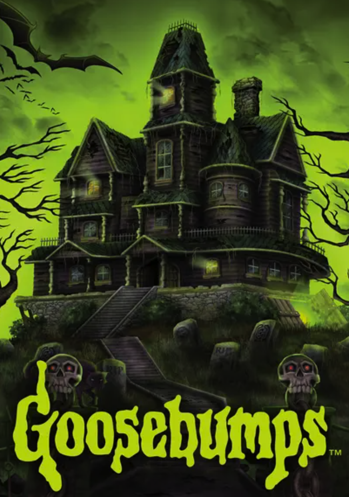

hover over the poster and the play button
Object: Tubi Poster Interaction
TRIGGERS:
- hovering over any poster
- hovering over the play button
- hover off the play button
- hover off the poster
RULES:
hovering over the poster
- the cursor becomes a pointer
- the poster picture slightly enlarges, but the frame stays the same size
- the poster picture becomes slightly darker
- a yellow play button appears in the middle of the poster
- the text "Add to My List" appears at the bottom of the poster
- when hovered over, the text goes from white to yellow and the cursor becomes a pointer
hovering off of the poster
- the poster picture goes back to its original size and brightness
- the cursor goes back to the default arrow
hovering on the play button
- the play button enlarges slightly
- the cursor becomes a pointer finger
hovering off of the play button
- the play button goes back to its original size
- the cursor goes back to the default arrow
hovering off of the poster
- the poster picture goes back to its original size
- the poster picture goes back to its original brightness
- the play button disappears
- the text "Add to My List" disappears
- when hovered off of, the text goes back from yellow to white and the cursor goes back to default
- the cursor goes back to the default arrow when off of the whole poster
FEEDBACK:
hovering over the poster
- the cursor becomes a pointer
- the poster picture slightly enlarges, but the frame stays the same size
- the poster picture becomes slightly darker
- a yellow play button appears in the middle of the poster
- the text "Add to My List" appears at the bottom of the poster
- when hovered over, the text goes from white to yellow and the cursor becomes a pointer
hovering off of the poster
- the poster picture goes back to its original size and brightness
- the cursor goes back to the default arrow
hovering on the play button
- the play button enlarges slightly
- the cursor becomes a pointer finger
hovering off of the play button
- the play button goes back to its original size
- the cursor goes back to the default arrow
hovering off of the poster
- the poster picture goes back to its original size
- the poster picture goes back to its original brightness
- the play button disappears
- the text "Add to My List" disappears
- when hovered off of, the text goes back from yellow to white and the cursor goes back to default
- the cursor goes back to the default arrow when off of the whole poster
LOOPS/MODE:
N/A